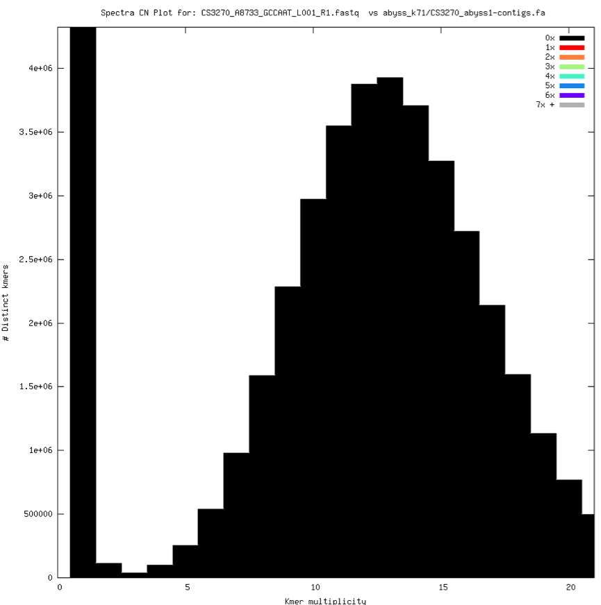
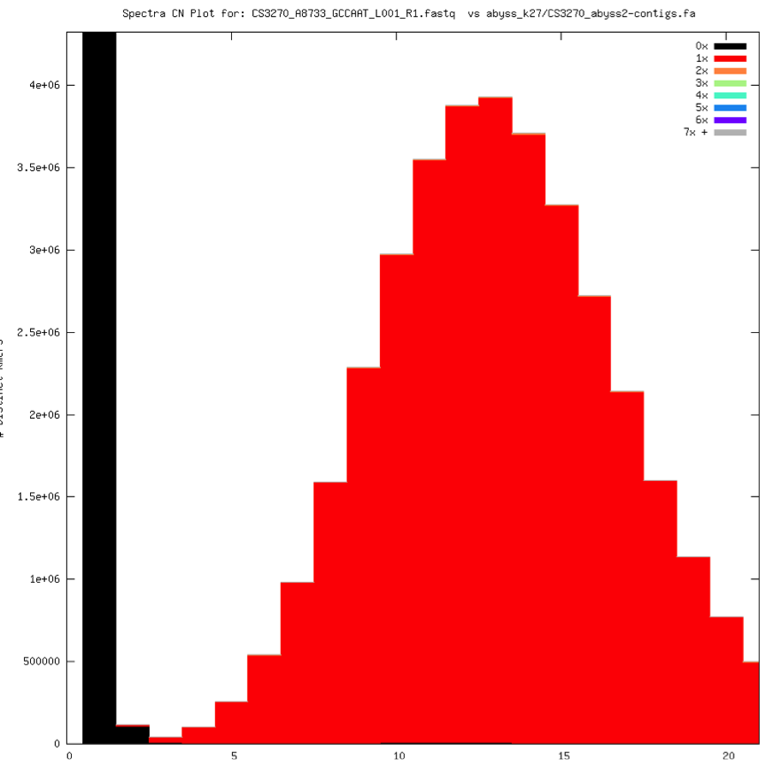

Eukaryote Genome Assembly
Key Learning Outcomes
After completing this module the trainee should be able to:
-
Assess general assembly approach, kmer spectra and biases.
-
Visually inspect the kmer spectra and KAT plots
-
Run a first pass eukaryotic assembly and do goal checks
-
Develop validation metrics or tools for NGS data and assembly.
-
Improving methods and pipelines for genome assembly.
-
Convince the lab guys to tweak protocols.
Resources You’ll be Using
Tools Used
Kmer Analysis Tool kit : \ https://github.com/TGAC/KAT
Nextclip : \ https://github.com/richardmleggett/nextclip
Abyss : \ http://www.bcgsc.ca/platform/bioinfo/software/abyss
Soap Denovo : \ http://soap.genomics.org.cn/soapdenovo.html
SOAPec : \ http://soap.genomics.org.cn/about.html
BLAST : \ http://blast.ncbi.nlm.nih.gov/Blast.cgi
First Pass Genome Assembly
Assuming by now you are familiar with the general concept of de novo assembly, kmers and the de Bruijn graph based assembler. In this tutorial we will use ABySS to perform the first pass assembly of a eukaryotic genome and look at various parameters to assess the information content of the input data and choice of assembly parameters. sequence data.\ Genome assembly is a challenging problem requiring heavy computational resources, expertise and time. Before you beging the process of denovo assembly there are a number of points you need to consider:
What is the objective of your assembly experiment? What biological question(s) you have?
Is assembly strictly neccessary for the purpose in question?
Do you have right kind of data and enough coverage to start with?
Do you have suitable computaitonal resources to run this assembly?
Remember that the assembly is just a probabilistic model of a genome, condensing the information from the experimental evidence. All the information is already present in the experimental results. The goal of the assembly is to find the right motifs, the correct number of times, in correct order and position.
Fusarium first pass with a goal
Goal: Identify a fusarium sample is ``closer” to F. graminearum or F.pseudograminearum
-
Previous knowledge
- F. graminearum has a cluster producing PKS6 and NRSP7, while F. pseudograminearum produces PKS40 and NRPS32
-
Data
-
Proteins sequences for:
-
F. graminearum (non necrotrophic): PKS6 and NRSP7
-
F. pseudograminearum (necrotrophic): PKS40 and NRPS32
-
-
-
Strategy:
- Check PKS6-NRSP7 and PKS40-NRPS32 cluster presence.
-
Assembly goals:
-
Assembly goal (I): to capture a good enough representation of the protein-coding space to get blast matches
-
Assembly goal (II): to accurately represent the relevant whole cluster loci in a single sequence.
-
Prepare the Environment
Open the Terminal. First, go to the right folder, where the data are stored.
cd /home/trainee/eukaryotic ls
Task1.1: First pass assembly, k=71
Let’s assemble Fusarium with abyss, k=71
cd /home/trainee/eukaryotic mkdir abyss_k71 cd abyss_k71 abyss-pe in="../CS3270_A8733_GCCAAT_L001_R1.fastq ../CS3270_A8733_GCCAAT_L001_R2.fastq" k=71 name=CS3270_abyss_k71 np=4 > CS3270_abyss_k71.log 2>&1
Description of the arguments used in the command:
k : = kmer size
np : = number of processors to be used
sequence file names : = R1 and R2 reads of a paired end sequence data
Let’s look at the statistics of the assembly we just did…
Ok, there is no stats available in the folder, but we can always use
abyss-fac to get the stats:
abyss-fac CS3270_abyss_k71-*tigs.fa | tee CS3270_abyss_k71-stats.tab less CS3270_abyss_k71-stats.tab
[H]
lllllllllll
n & n:500 & L50 & min & N80& N50& N20& E-size& max & sum& name\ 27 & 13 & 2 & 970 & 6004 & 13202 & 52602 & 28712 & 52602 & 112849 & CS3270_abyss_k71-unitigs.fa%\ 5 & 1 & 1 & 128429 & 128429 & 128429 & 128429 & 128429 & 128429 & 128429 & CS3270_abyss_k71-contigs.fa%\
[tab:fusariumk71]
How many unitigs/contigs do you have in the assembly?\
27/5\
What are the length statistics of your assembly?\
in the table above\
Does it match what you think before the assembly and why?\
No\
The assembly is looking strange! It’s time for some analysis:
Check frequencies for kmers kept/discarded/etc.
Check spectra-cn and compare with expectations. Let’s do this by the following commands:
less CS3270_abyss_k71.log less coverage.hist
We will now plot the values from the coverage.hist:
gnuplot <Press enter> gnuplot> set xrange [0:200] gnuplot> set yrange [0:5000] gnuplot> plot "coverage.hist" Type exit or quit to leave the gnuplot gnuplot> exit
Looks like we are not assembling this bit, let’s have another look at the spectra
kat comp -o reads_vs_abyss_k71 -t 4 -C -D --d1_bins 2000 '../*.fastq' CS3270_abyss_k71-contigs.fa
Description of the arguments used in the command:
o : = Path prefix for files generated by this program.
t : = The number of threads to use.
C : = Whether the jellyfish hash for input 1 contains K-mers produced for both strands
D : = Whether the jellyfish hash for input 2 contains K-mers produced for both strands
–d1_bins : = Number of bins for the first dataset. i.e. number of rows in the matrix
kat plot spectra-cn -y 600 -x 2000 -o reads_vs_abyss1-main.mx.spectra-cn_2000.png reads_vs_abyss_k71-main.mx
Description of the arguments used in the command:
x : = Maximum value for the x-axis (default value auto calculated from matrix, otherwise 1000)
y : = Maximum value for the y-axis (default value auto calculated from matrix if possible, otherwise, 1000000)
o : = The path to the output file
The kmer spectra for Fusarium assembly with abyss, k=71 should be looking like this:
[H]  [fig:fusariumk71]
Take the output and BLAST it in NCBI. What is it? Surprising?
Choosing a wrong k value (too large in this case) and just running a typical assembly job, we can end up with something quite more interesting. It is easy by comparison to spot some missing content, alongside duplications and triplications (and quadruplications and so on) that should not be there. This assembly will get us nowhere, let’s choose a lower K to gain coverage and start again.
Task1.2: First pass assembly, k=27
We now assemble fusarium with abyss and k=27:
cd /home/trainee/eukaryotic mkdir abyss_k27 cd abyss_k27 abyss-pe in="../CS3270_A8733_GCCAAT_L001_R1.fastq ../CS3270_A8733_GCCAAT_L001_R2.fastq" k=27 name=CS3270_abyss_k27 np=4 > CS3270_abyss_k27.log 2>&1
Let’s look at the stats by doing:
less CS3270_abyss_k27-stats.tab
Stats look better:
[H]
lllllllllll
n & n:500 & L50 & min & N80& N50& N20& E-size& max & sum& name\ 30645 & 2717 & 430 & 502 & 11354 & 25336 & 47966 & 31027 & 147694 & 36.14e6 & CS3270_abyss_k27-unitigs.fa\ 21511 & 350 & 33 & 527 & 157565 & 338989 & 630228 & 407098 & 1265237 & 36.52e6 & CS3270_abyss_k27-contigs.fa\ 21327 & 205 & 17 & 527 & 332444 & 716132 & 1265237 & 791882 & 1880850 & 36.51e6 & CS3270_abyss_k27-scaffolds.fa\
[tab:fusariumk27]
Let’s check a bit anyway:
less CS3270_abyss_k27.log less coverage.hist
How is the coverage plot looking now?
gnuplot gnuplot> set xrange [0:50] gnuplot> set xrange [0:4000000] gnuplot> plot "coverage.hist" gnuplot> exit
K-mer spectrum:
kat plot spectra-cn -y 1000 -x 1000 -o reads_vs_abyss1-main.mx.spectra-cn_noabsent.png reads_vs_abyss1-main.mx kat comp -o reads_vs_abyss_k27 -t 4 -C -D '../*.fastq' CS3270_abyss_k27-scaffolds.fa
[H]  [fig:fusariumk27]
Any tools you can use to check kmer spectra at any K before assembling?\
KAT\
Can you predict what will happen if you use KAT with larger K values?\
Will the assembly answer the biological question?
Use BLAST or BLAT and the databases to check…
makeblastdb -in CS3270_abyss_k27-scaffolds.fa -dbtype nucl blat –t=dnax –q=prot –minIdentity=90 CS3270_abyss_k27-scaffolds.fa test_genes.fasta out.psl
References
- De novo genome assembly: what every biologist should know Nature Methods 9, 333 – 337 (2012) doi:10.1038/nmeth.1935